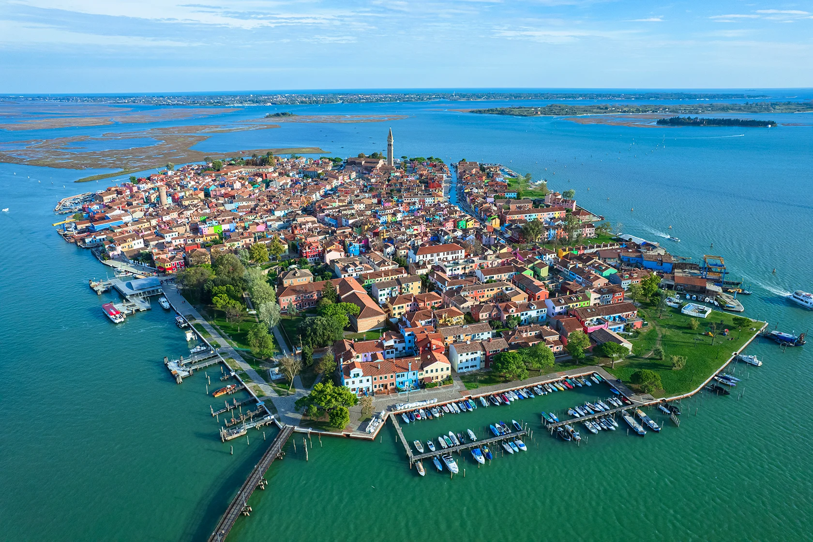

Venice, also known as 'The Floating City', 'Queen of the Adriatic' or 'The City of Masks' is arguably one of Italy's most picturesque cities. Venice, city, major seaport, and capital of both the provincia (province) of Venezia and the regione (region) of Veneto, northern Italy. An island city, it was once the centre of a maritime republic. It was the greatest seaport in late medieval Europe and the continent’s commercial and cultural link to Asia. Venice is unique environmentally, architecturally, and historically, and in its days as a republic the city was styled la serenissima (“the most serene” or “sublime”). It remains a major Italian port in the northern Adriatic Sea and is one of the world’s oldest tourist and cultural centres.
Once the capital of a Republic that ruled the most powerful empire in the Mediterranean, Venice’s history was shaped by its unique location in the centre of a mass of islands in a coastal lagoon. The history of Venice dates back to the 6th century, and once wasn’t just a city in a larger state: Venice was one of the greatest trading powers in medieval and Renaissance Europe. At the end of the Silk Route from China, Venice was a cosmopolitan city that found its fortunes in luxurious trade and cargo from Europe, the Middle East and Asia. Venice developed as a trading centre, doing business with not only the Islamic world, but also with the Byzantine Empire , with whom it remained close. For an empire with little commercial nous, Venice benefitted from Byzantium’s cultural influence and from trading links with different parts of its vast empire. In the following centuries, Venice asserted its independence from the Byzantine Empire and due to its location flourished as a trading hub between Europe and the East. Venetian merchants sold Italian grain and wine to the great city of Constantinople, where in turn they bought spices and silver to sell to western Europe. Above all, Venice’s early success came from the trade of salt, the vital food preservative of the medieval world harvested from saltpans and lagoons. The Venetians went so far as to describe salt as “il vero fondamento del nostro stato” – the true foundation of our state. Venice’s history changed in 1202 when the Fourth Crusade arrived in Venice, seeking ships to take them to Egypt, however with no money to pay for them. Doge Enrico Dandolo sensed an opportunity: in exchange for loans, he first persuaded the crusaders to capture Zadar in Dalmatia for Venice, then relations having soured between Venice and the Byzantines, to attack Constantinople itself. In 1204, the world’s greatest Christian city was sacked and plundered by self-proclaimed warriors of Christ. Venice took its share of the loot, including, most famously, four bronze horses that once adorned the hippodrome of Constantine that found a new home on the façade of the Basilica of Saint Mark. The original sculptures were removed in 1973 following conservation concerns and were replaced by replicas. The originals are on display inside the basilica. The Venetian Republic came to an end in 1797, when Napoleon’s French army forced the city to agree to a new pro-French “democratic” government, after which the city was looted of its great artworks. Venice was briefly Austrian after a peace treaty with Napoleon, but landed back into the hands of the French after the Battle of Austerlitz in 1805 and formed part of the short-lived Kingdom of Italy. The fall of Napoleon from power saw Venice placed under Austrian rule. n 1966, Venice suffered a severe flood but the city soon recovered, leading to arguments over how to best treat Venice’s architecture and buildings. Conservation efforts which have been put in place retain much of the atmosphere that Venice is famous for, however flooding remains a problem. While tourism has been the mainstay of Venice since the mid-20th century, its population has sharply fallen and as of 2020, it is home to 55,000 people, compared to 120,000 in 1980.
The Venetian Lagoon stretches from the River Sile in the north to the Brenta in the south, with a surface area of around 550 square kilometres (212 square miles). It is around 8% land, including Venice itself and many smaller islands. About 11% is permanently covered by open water, or canals, as the network of dredged channels are called, while around 80% consists of mud flats, tidal shallows and salt marshes. The Lagoon is the largest wetland in the Mediterranean Basin. It is connected to the Adriatic Sea by three inlets: Lido, Malamocco and Chioggia. Situated at one end of a largely enclosed sea, the lagoon is subject to large variations in its water level.[3] The most extreme are the spring tides known as the acqua alta (Italian for "high water"), which regularly flood much of Venice. The nearby Marano-Grado Lagoon, with a surface area of around 160 square kilometres (62 square miles), is the northernmost lagoon in the Adriatic Sea and is sometimes called the "twin sister of the Venice lagoon".
The Lion of Venice is an ancient bronze sculpture of a winged lion in the Piazza San Marco of Venice, Italy, which came to symbolize the city—as well as one of its patron saints, St Mark—after its arrival there in the 12th century. The sculpture surmounts one of two large granite columns in the Square, thought to have been erected between 1172 and 1177 during the reign of Doge Sebastiano Ziani or about 1268, bearing ancient symbols of the two patron saints of Venice. It is likely that the statue was assembled into something like its present form by or during the Medieval period. The earliest textual reference to the Lion is from 1293, when it is recorded as having been restored after long neglect. The Lion was taken to France after Napoleon's conquest of the Venetian Republic, during his 1797 campaign in Italy. It was damaged in the course of removal and transport, lacking wings, paws, tail, and Gospel-book. After being restored by French sculptors, possibly Edme Gaulle or Jean Guillaume Moitte, the Lion was mounted on a plinth in the new Fontaine des Invalides. The fountain, completed in 1804, was located at the Place des Invalides, Paris. After Napoleon's downfall the Lion was returned to Venice, now a part of the Austrian Empire. On 2 October 1815, during the process of removal, it was again badly damaged. A rope broke, the statue fell, and smashed apart; whether by accident, or in an act of sabotage by one of the French workers is unclear. As a result, the bronze figure was broken into approximately 20 pieces. Having lost its main ornament, the Fontaine des Invalides was eventually redesigned, and finally demolished in 1840. Repatriated to Venice, the fragments of the Lion were stored at the Arsenal before it was repaired by Bartolomeo Ferrari and returned to its column, officially, on 13 April 1816. This restoration included an alteration to the Lion's tail, now extended, which had previously been tucked between its hind legs. The book beneath its paws was again recast, the French replacement having been lost, stolen, or abandoned. Ultimately, the image of the Lion became a symbol of the Republic of Venice and appeared on its flag. Internationally, it is also well known in the form of the Golden Lion prize which came to represent the strenght of the city.